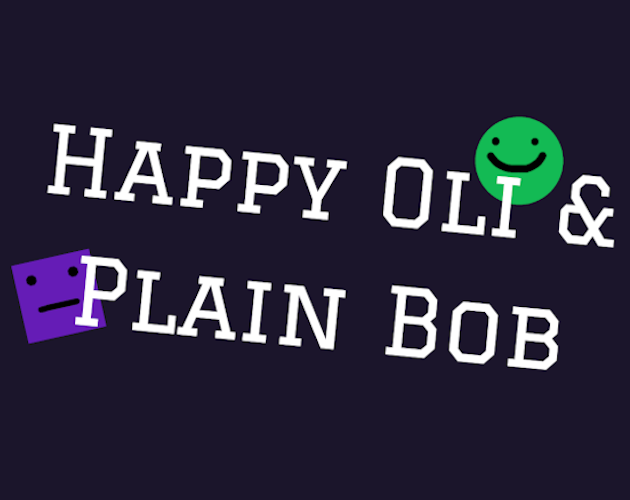

Sobre Mim
Olá, me chamo João Pedro Souza da Cruz, tenho 20 anos e sou um estudante de Sistemas de Informação. Apaixonado por tecnologia, busco sempre estar atualizado na área. Focando no desenvolvimento Front-End Web, além de explorar outras áreas, como o desenvolvimento de jogos no meu tempo livre.
Projetos
Pong Alone
Pong Alone é um jogo feito utilizando a Game Engine Godot. Inspirado pelo antigo Pong, nessa versão você joga sozinho contra a parede. Disponivel para Navegador, Windows, Linux e Android.
Happy Oli & Plain Bob
Happy Oli & Plain Bob é um jogo feito utilizando a Game Engine Godot. Desenvolvido em menos de 48h para a GMTK Game Jam 2021. Disponivel para Navegador.
Adiciona e Subtrai
Projeto simples em HTML5, CSS e Javascript. Botões para adicionar um ao contador, zerar o contador e diminuir um do contador, sendo zero o menor número possivel.
Calculadora
Calculadora feita em HTML5, CSS e Javascript que efetua todo tipo de equação matemática.
Criador de Videos em Python
Conjunto de scripts escritos em Python3 que fazem o download de videos a partir de uma lista de links do Youtube e edita eles em um formato de "Top 10". Exemplos de vídeos feitos com esses scripts nesse canal do Youtube.